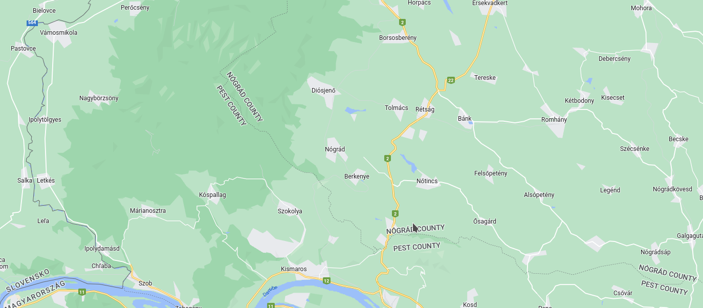

A Somodi család térképe készül!
Kattints Nógrád településre

Nógrád település emlékei:
Vadetetés a nógrádi vadasparkban.
Nógrádi vár (éppen zenélt egy DJ, videoklippet készítettek).
Hatalmas befagyott pocsolyán korcsolyáztunk.
Új emlék